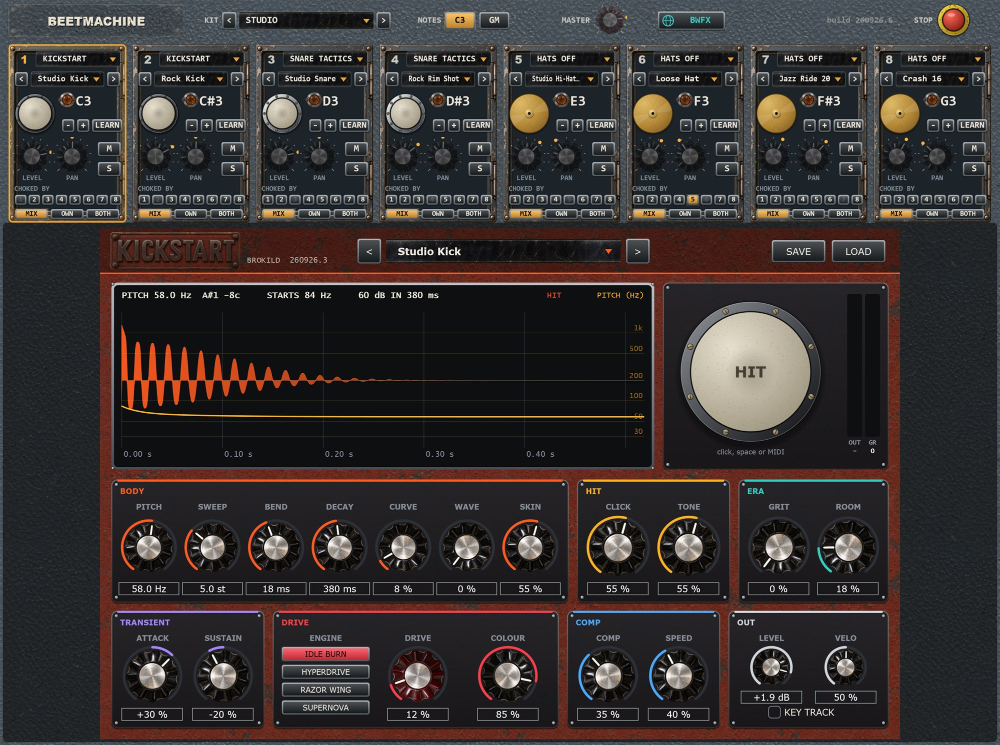
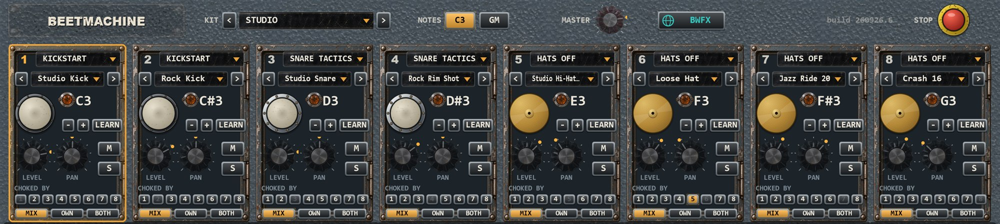
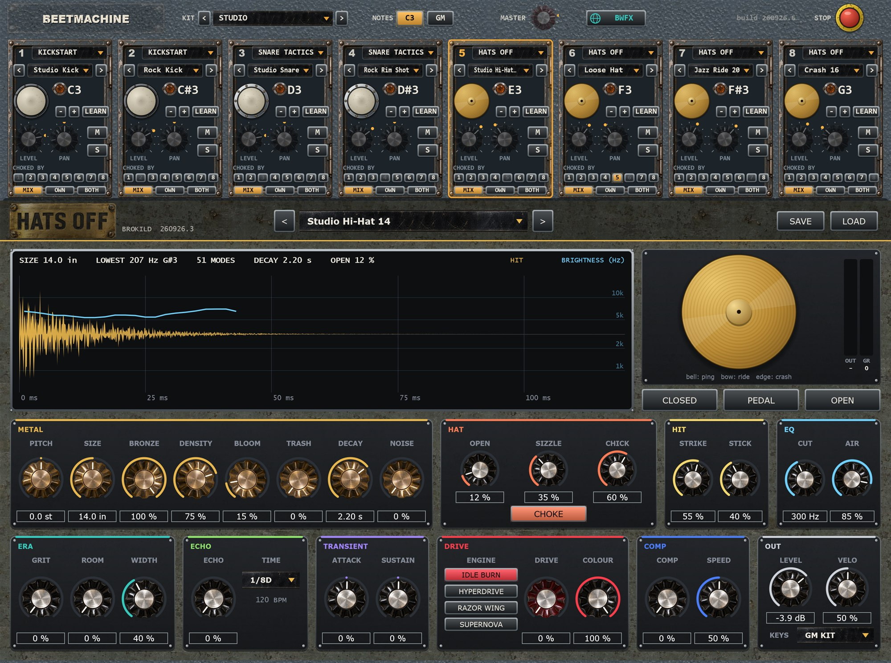
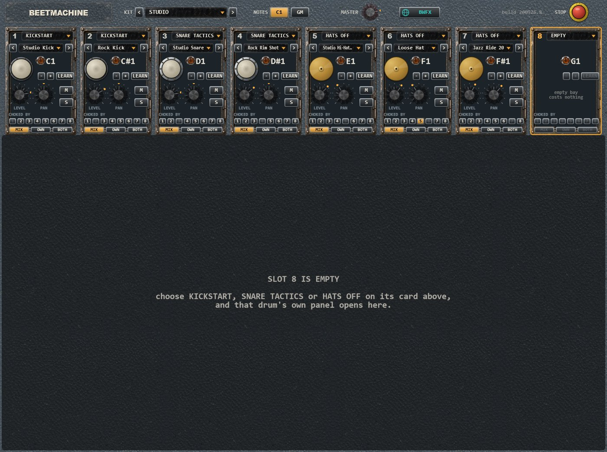
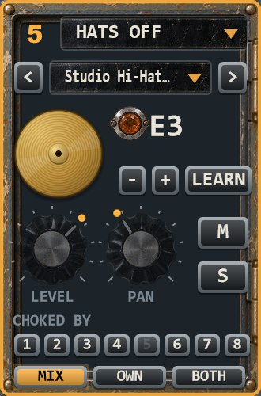
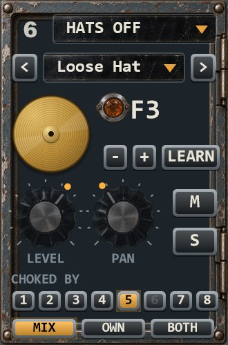

Eight slots, three drum synthesisers, one kit. No samples.
Beetmachine is a drum kit built from Brokild’s three drum synthesisers. Each of its eight slots holds a real copy of Kickstart, Snare Tactics or Hats Off — or nothing, which costs no CPU at all. Click a slot and that drum’s own full panel opens underneath: every control, its presets, its load and save. Around them, the things a kit needs: chokes, a note per slot, per-slot outputs, and ten themed kits to start from.
Windows VST3 + standalone · free download · source included · build 260926.6

Not a sample player, and not cut-down copies of the drums. Each occupied slot runs the real thing.
An occupied slot runs a real copy of that drum, built from the drum’s own source. Whatever the drum can do on its own, it can do here, and everything set in its panel is saved with your project. An empty slot costs nothing: eight of them measure 0.011 % of one core.
There is a convention, not a rule: kicks in slots 1–2, snares in 3–4, hi-hats, ride, crash and splash in 5–8. Any slot can hold any drum.



Whole kits, straight out of the factory: every hit is one of the three drums inside Beetmachine, played from one MIDI pattern with the kit’s own levels, pans and chokes. Nothing added afterwards.
A rock beat at 96 bpm on two Kickstarts, two Snare Tactics and the Hats Off cymbals.
Electro at 112 bpm. The open hat in slot 6 is cut off every time the closed hat in slot 5 plays.
Four on the floor at 124 bpm, with the open hat on the off-beats.
A lazy 88 bpm shuffle with ghost notes on the second snare.
132 bpm: rolling sixteenths, open hats on the off-beats and a ride on top.
Four more kits, four bars each, each at its own tempo, loaded one after the other.
Everything a kit needs from a slot, on one card.


The slot’s type — EMPTY, KICKSTART, SNARE TACTICS or HATS OFF — and the drum’s own factory presets, with < > to step through them.
The black palm HIT button plays the slot; the amber jewel lamp lights on every hit. − and + move the note a semitone; LEARN, then play a key, and that key triggers the slot.
LEVEL and PAN: double-click for 0 dB or centre. M mutes; S solos, and while any slot is soloed only the soloed ones sound.
Light another slot’s number and a hit there silences this one, with a 3 ms fade so it does not click. In every kit the open hat in slot 6 is choked by the closed hat in slot 5.
The main stereo mix, the slot’s own stereo output pair (taken out of the mix), or both. The eight extra pairs are off until your host enables one; until then an OWN slot stays in the mix and its card says OFF IN HOST.
KIT with < >, NOTES C3 / GM, the red MASTER knob, BWFX — the Brokild World FX rack on the main mix, the same one every Brokild synth has, with a slot on its OWN output going round it — and STOP, the red emergency stop: every slot fades out at once.
It plays from a keyboard, from your own MIDI, and from a General MIDI file.
By default the kit sits on eight neighbouring keys, C3 to G3 (Ableton’s naming, where C3 is MIDI note 60). The GM switch moves it to the General MIDI drum notes — 36, 35, 38, 40, 42 for the closed hat, 46 for the open hat, 51 for the ride and 49 for the crash — so grooves written for GM play the right drums. Move any note and the header says CUSTOM. Two slots on the same note both play.
The three drums have different built-in latencies: 95 samples for the kick and the snare, 103 for the hats, at 48 kHz. Beetmachine aligns every slot, so drums played together land on the same sample, and it reports its latency to the host.
Each one names eight of the drums’ own presets, slots 1 to 8.
What a slot costs, and how the kit keeps time.
The zip holds Beetmachine.vst3, the standalone application and
this manual as a PDF. Copy Beetmachine.vst3 into
C:\Program Files\Common Files\VST3\ and rescan. The
standalone needs no installing.
The three drums are also free on their own — Kickstart, Snare Tactics and Hats Off — and all four come together in the Beetmachine Collection.
| Format | Windows VST3 (64-bit), plus a standalone application |
| Type | Instrument / Drum — MIDI in; a stereo mix plus eight stereo slot outputs, off until the host enables them |
| Sound | Fully synthesised. No samples |
| Slots | Eight, each empty, Kickstart, Snare Tactics or Hats Off, with that drum’s own full panel |
| Kits | Ten themed kits |
| Notes | C3 upwards, General MIDI, or any note per slot. LEARN from a key |
| Chokes | Any slot can be choked by any others, with a 3 ms fade |
| Automation | Level, pan and mute per slot, master, BWFX macros 1–5 |
| Latency | 103 samples at 48 kHz, reported to the host; every slot aligned |
| CPU | An empty slot costs nothing; a full kit hit on every 16th, about 40–46 % of one core |
| Build | 260926.6 |
| Licence | AGPLv3, source on GitHub |
| Price | Free. No account, no registration, no telemetry. |